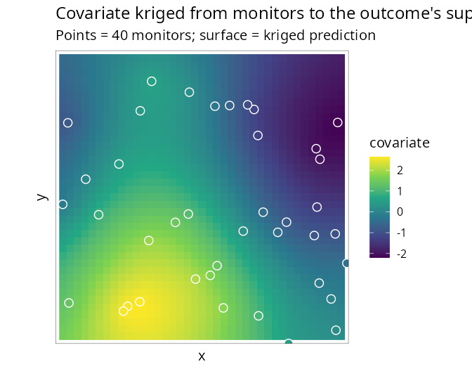

6. Covariates measured on a different support
Source:vignettes/misaligned-covariates.Rmd
misaligned-covariates.RmdCovariates are frequently observed on a different support
from the outcome: air quality at a handful of monitoring stations,
temperature on a coarse climate grid, deprivation on census tracts that
do not match the health districts the counts are reported on.
SDALGCP2 aligns them by predicting the covariate to
the candidate points of the outcome regions and entering it
with an uncertainty-aware (Berkson) correction.
Point support: monitors
Suppose the covariate z is observed only at 40 scattered
monitors (an sf of points with a z column),
while the outcome is counts over a lattice. Pass the monitors through
covariates =:
library(SDALGCP2)
library(sf)
# monitors: sf POINTs with a 'z' column ; regions: sf POLYGONs with cases, pop
fit <- sdalgcp(cases ~ z + offset(log(pop)), data = regions,
covariates = list(z = monitors))
summary(fit)Internally the covariate is kriged from the monitors to every candidate point, giving a predictive mean and variance at each:

The fit then uses the intensity-scale offset with a Berkson term,
,
so the prediction uncertainty is propagated rather than ignored (which
would attenuate
).
On simulated data the effect (true 0.8) is recovered as
from the monitors alone. Set berkson = FALSE in
SDALGCP2_misaligned() for the naive kriged-mean
plug-in.
Areal support: a different partition
If the covariate is reported as averages over other
polygons (e.g. a coarser grid or census tracts), supply those
polygons instead — SDALGCP2 detects the geometry and uses
aggregated areal kriging, reusing the same C++ kernels that
build the outcome correlation:
# covpoly: sf POLYGONs (a different partition) with a 'z' column of areal averages
fit_areal <- sdalgcp(cases ~ z + offset(log(pop)), data = regions,
covariates = list(z = covpoly))Recovered effect on simulated data: (true 0.8), from a covariate averaged over 25 polygons that do not match the 64 outcome regions.
Notes
The candidate-point grid that discretises the outcome regions doubles
as the common support on which outcome and covariate are aligned. The
covariate’s own spatial model (range, nugget, variance) is estimated by
maximum likelihood. Full derivation, including the Berkson correction
and the areal cross-covariances, is in
math/confounding-and-misalignment.pdf. ```